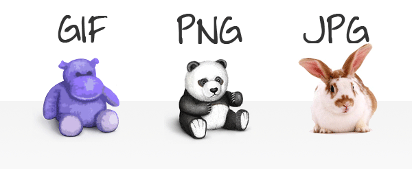

At present, there are three commonly used image formats in the development of front-end: JPG, PNG, GIF.

GIF is a picture format that is being gradually abandoned. The emergence of PNG format is to replace it. PNG 8 has all the features of GIF except that it does not support animation, but it has the advantage over GIF in supporting alpha transparency and better compression (GIF only supports index transparency). But GIF still has a place on the Internet, for example, in paste bar or Fackbook posts often see animated pictures, using gif. When the color of the picture is simple to a certain extent and the size is small to a certain extent, the size of the GIF format picture is smaller than png8. For example, a pure black dot of 1*1 pixels, 124byte under PNG8 and 43byte under GIF. The image underneath is in GIF format.
Here, PNG puts it in the end and says that PNG can be subdivided into three formats: PNG8, PNG24, PNG32. The numbers behind represent the color values that can be indexed and stored in this PNG format. " The 8 "2" 8 party is 256 colors, while the 24 represents 24 of the 2.
Here is a JPG format of image underneath.
Here is a JPG format of image underneath.